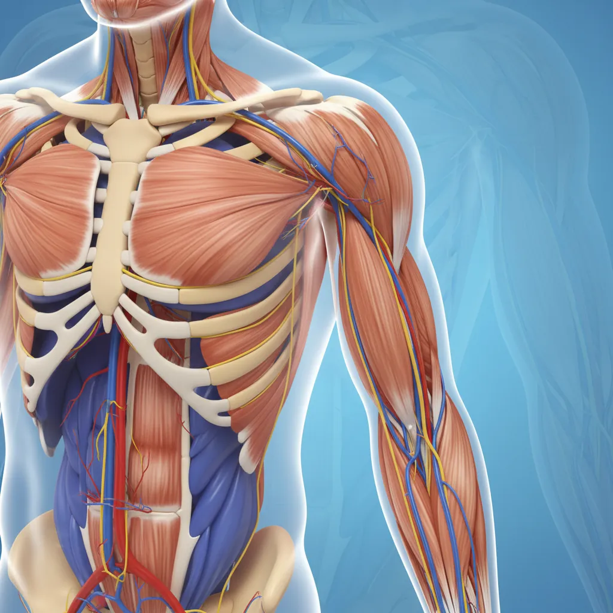
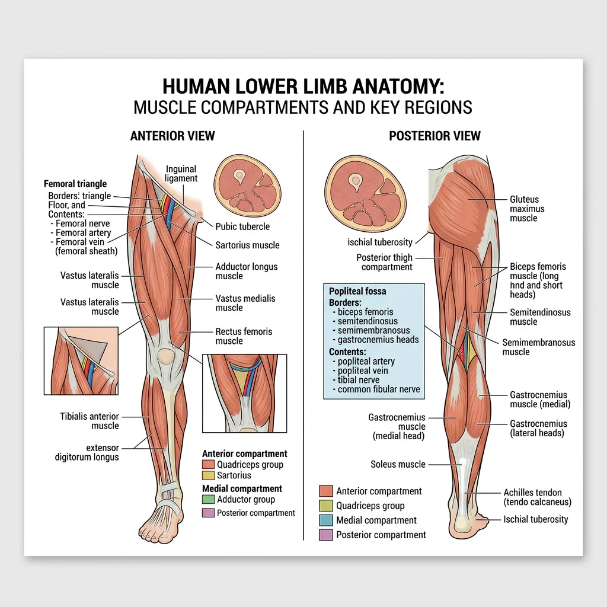
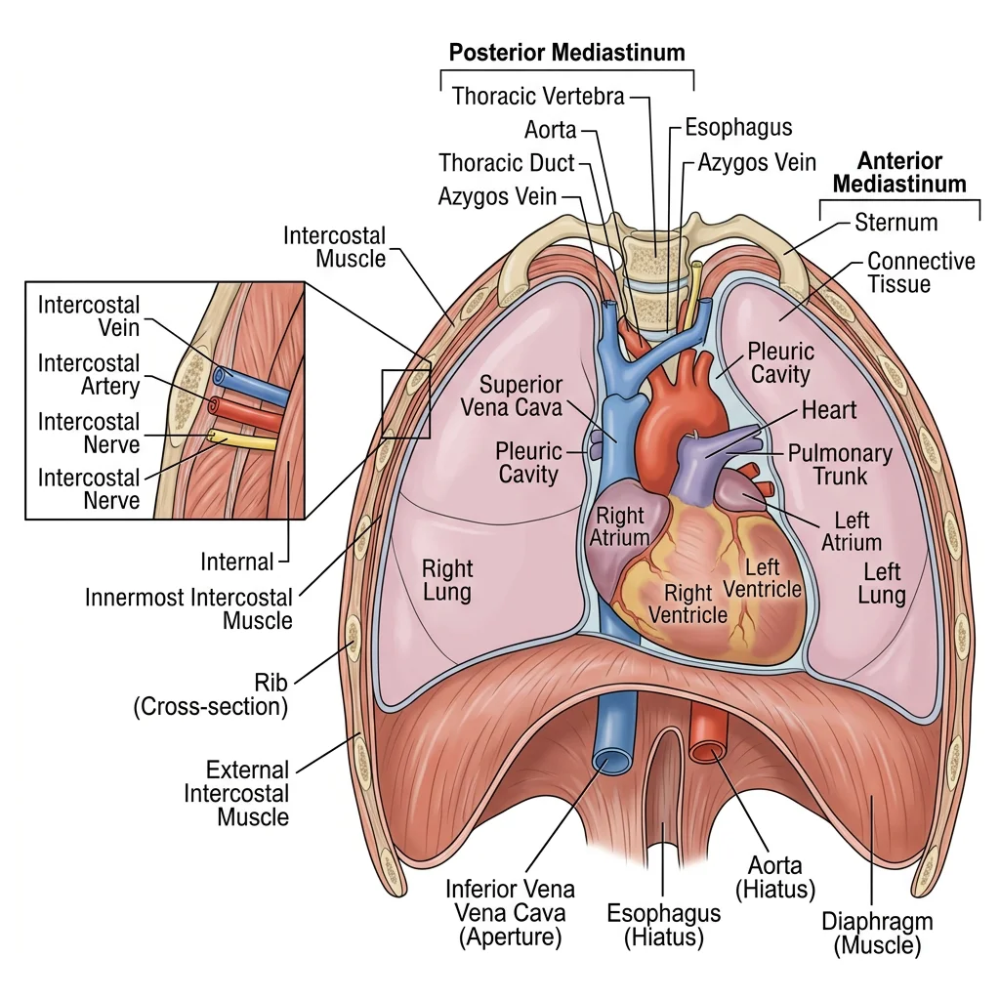
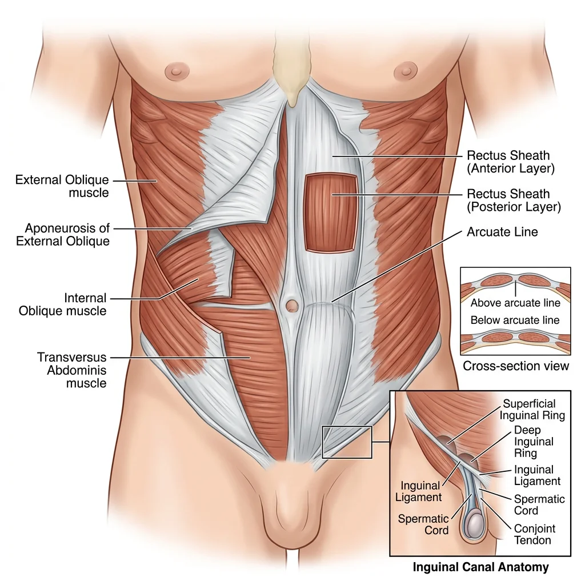
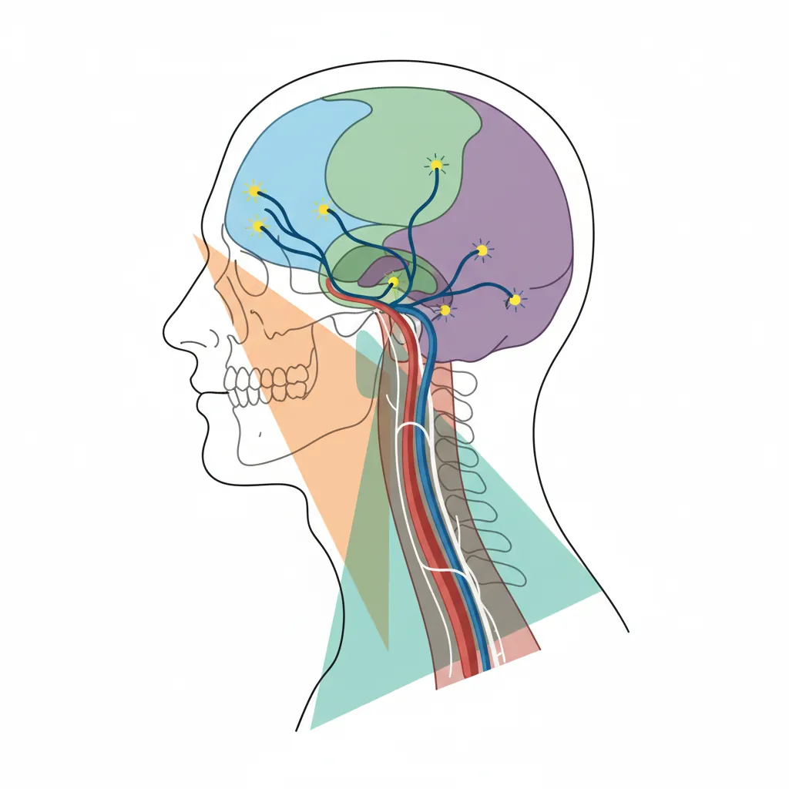

Human Anatomy Mastery
Anatomical Terminology & Body Planes
Directional terms, planes, cavities, tissuesSkeletal System & Joints
Osteology, axial & appendicular, arthrologyMuscular System & Movement
Muscle types, functional groups, biomechanicsCardiovascular & Lymphatic Anatomy
Heart, vessels, lymphatics, clinical linksNervous System & Neuroanatomy
CNS, PNS, autonomic, functional pathwaysVisceral Anatomy — Thorax & Abdomen
Thoracic & abdominal organs, peritoneumHead, Neck & Special Senses
Skull foramina, eye, ear, oral anatomySurface Anatomy & Clinical Imaging
Landmarks, X-ray, CT, MRI, proceduresHistology & Microscopic Anatomy
Cell ultrastructure, tissue & organ histologyEmbryology & Developmental Anatomy
Germ layers, organogenesis, malformationsFunctional & Applied Anatomy
Biomechanics, posture, gait, integrationRegional Dissection Mastery
Upper/lower limb, thorax, abdomen, pelvisUpper Limb
The upper limb is a masterpiece of evolutionary engineering — a structure that has traded weight-bearing stability for extraordinary dexterity and range of motion. From the freely mobile shoulder girdle to the precision grip of the hand, every anatomical detail reflects millions of years of adaptation for tool use, communication, and fine motor control. Regional dissection of the upper limb integrates knowledge from every system we have studied: bones and joints provide the scaffold, muscles generate the forces, nerves carry the commands, and vessels deliver the fuel.

Shoulder & Arm
The shoulder region encompasses the pectoral girdle (clavicle and scapula) and the glenohumeral joint — the most mobile joint in the body. This mobility comes at the cost of stability; the shallow glenoid fossa provides minimal bony constraint, relying instead on the rotator cuff muscles (supraspinatus, infraspinatus, teres minor, subscapularis — the "SITS" muscles) and the glenoid labrum for stability.
During dissection, the shoulder is approached by first reflecting the superficial muscles — trapezius posteriorly and deltoid laterally — to reveal the deeper rotator cuff. The suprascapular nerve passes through the suprascapular notch under the transverse scapular ligament, a common site of entrapment. The axillary nerve wraps around the surgical neck of the humerus with the posterior circumflex humeral artery, making it vulnerable in shoulder dislocations and surgical neck fractures.
The arm proper contains two compartments separated by the medial and lateral intermuscular septa. The anterior compartment houses the flexors (biceps brachii, brachialis, coracobrachialis), innervated by the musculocutaneous nerve. The posterior compartment contains the triceps brachii, innervated by the radial nerve. The radial nerve spirals in the radial groove of the humerus — a fracture at the midshaft can paralyze wrist and finger extension ("wrist drop").
Erb-Duchenne Palsy — The "Waiter's Tip" Deformity
A newborn delivered with excessive lateral traction on the head during birth presents with the arm hanging limply at the side, medially rotated, with the forearm pronated and wrist flexed — the classic "waiter's tip" position. This results from injury to the upper trunk of the brachial plexus (C5-C6), affecting the suprascapular, musculocutaneous, and axillary nerves. The deltoid cannot abduct, the biceps cannot flex the elbow or supinate, and the shoulder cannot externally rotate. Understanding the brachial plexus anatomy allows precise localization of the injury level.
Forearm & Hand
The forearm is divided into anterior (flexor-pronator) and posterior (extensor-supinator) compartments by the interosseous membrane connecting the radius and ulna. The anterior compartment has superficial and deep layers: the superficial group (pronator teres, flexor carpi radialis, palmaris longus, flexor carpi ulnaris, flexor digitorum superficialis) originates from the medial epicondyle; the deep group (flexor digitorum profundus, flexor pollicis longus, pronator quadratus) lies against the interosseous membrane.
The carpal tunnel is the most clinically significant space in the wrist — bounded by the carpal bones posteriorly and the flexor retinaculum anteriorly, it transmits nine tendons and the median nerve. Compression of the median nerve here produces carpal tunnel syndrome: numbness in the lateral 3½ digits, weakness of thenar muscles, and nocturnal pain.
The hand's intrinsic muscles — the thenar group (opponens pollicis, abductor pollicis brevis, flexor pollicis brevis), hypothenar group, lumbricals, and interossei — provide the fine motor control that distinguishes human dexterity. The lumbricals are unique: they originate from tendons (FDP) and insert into tendons (extensor expansion), enabling simultaneous MCP flexion and IP extension — the movement used to hold a pen.
Brachial Plexus & Vascular Supply
The brachial plexus (C5-T1) is the master nerve network of the upper limb. Its organization follows a logical pattern: Roots → Trunks → Divisions → Cords → Branches (mnemonic: "Robert Taylor Drinks Cold Beer"). The roots emerge between the anterior and middle scalene muscles in the neck. The three trunks (upper C5-C6, middle C7, lower C8-T1) pass through the posterior triangle. Anterior and posterior divisions form behind the clavicle. The three cords (lateral, posterior, medial) surround the second part of the axillary artery and are named by their relationship to it.
| Terminal Branch | Cord Origin | Roots | Key Muscles | Injury Sign |
|---|---|---|---|---|
| Musculocutaneous | Lateral cord | C5-C7 | Biceps, brachialis, coracobrachialis | Weak elbow flexion |
| Median | Lateral + medial cords | C5-T1 | Forearm flexors, thenar muscles, lumbricals 1-2 | "Hand of benediction," ape hand |
| Ulnar | Medial cord | C8-T1 | Interossei, hypothenar, adductor pollicis | Claw hand, Froment's sign |
| Radial | Posterior cord | C5-T1 | Triceps, extensors of wrist/fingers | Wrist drop |
| Axillary | Posterior cord | C5-C6 | Deltoid, teres minor | Loss of shoulder abduction, regimental badge anaesthesia |
The arterial supply follows the limb as a continuous chain: the subclavian artery becomes the axillary artery at the lateral border of the first rib, then the brachial artery at the inferior border of teres major. The brachial artery divides at the cubital fossa into the radial and ulnar arteries, which form the superficial and deep palmar arches in the hand. Allen's test evaluates the integrity of these arches before radial artery cannulation.
Lower Limb
If the upper limb is designed for mobility and dexterity, the lower limb is engineered for stability, weight-bearing, and locomotion. The bones are larger and heavier, the joints more constrained, and the muscles more powerful. Yet the neurovascular organization follows the same logical principles — compartments define function, nerves follow predictable paths, and arteries supply specific territories. Regional dissection reveals how these systems integrate to produce the miracle of bipedal gait.

Hip & Thigh
The hip joint is a ball-and-socket joint engineered for stability. Unlike the shallow glenoid of the shoulder, the acetabulum is a deep socket that covers over half of the femoral head, further deepened by the acetabular labrum. The joint capsule is reinforced by three powerful ligaments — iliofemoral (the strongest ligament in the body, preventing hyperextension), pubofemoral (preventing excessive abduction), and ischiofemoral (preventing excessive medial rotation).
The thigh has three fascial compartments. The anterior compartment (quadriceps femoris and sartorius) is innervated by the femoral nerve and extends the knee. The medial compartment (adductor group: longus, brevis, magnus, gracilis, pectineus) is innervated by the obturator nerve and adducts the thigh. The posterior compartment (hamstrings: biceps femoris, semitendinosus, semimembranosus) is innervated by the sciatic nerve and flexes the knee and extends the hip.
The femoral triangle (bounded by the inguinal ligament superiorly, sartorius laterally, and adductor longus medially) is a critical clinical landmark. Its contents from lateral to medial follow the mnemonic "NAVY": Nerve, Artery, Vein, Y-fronts (lymphatics). The femoral artery is palpated here, femoral vein accessed for central lines, and femoral hernias emerge through the femoral canal medial to the vein.
Femoral Neck Fracture — The Garden Classification
A 78-year-old woman with osteoporosis falls and cannot bear weight on her right leg. The leg is shortened and externally rotated. X-ray reveals a displaced intracapsular femoral neck fracture (Garden IV). This fracture disrupts the retinacular arteries (branches of the medial circumflex femoral artery) that supply the femoral head, risking avascular necrosis. Treatment requires hip hemiarthroplasty rather than fixation because of the compromised blood supply. Understanding the anatomy of the femoral neck blood supply — running along the neck under the capsule — explains why intracapsular fractures behave differently from extracapsular ones.
Leg & Foot
The leg (between knee and ankle) has four compartments. The anterior compartment contains the dorsiflexors (tibialis anterior, extensor hallucis longus, extensor digitorum longus) innervated by the deep fibular nerve. The lateral compartment houses the fibularis (peroneus) longus and brevis, innervated by the superficial fibular nerve — the evertors of the foot. The posterior compartment has superficial (gastrocnemius, soleus, plantaris) and deep (tibialis posterior, FDL, FHL) layers, innervated by the tibial nerve.
The tarsal tunnel — posterior to the medial malleolus — is the lower limb equivalent of the carpal tunnel. It transmits "Tom, Dick, and a Nervous Harry": Tibialis posterior tendon, Digitorum longus (FDL) tendon, posterior tibial Artery, tibial Nerve, and flexor Hallucis longus tendon. Compression here causes tarsal tunnel syndrome with plantar parasthesia.
The foot has a complex architecture of arches (medial longitudinal, lateral longitudinal, transverse) maintained by bony shape, ligaments (especially the spring ligament and long plantar ligament), and muscle tone. The plantar fascia (plantar aponeurosis) spans from the calcaneal tuberosity to the toes — its inflammation produces plantar fasciitis, the most common cause of heel pain.
Lumbar & Sacral Plexus, Vascular Supply
The lower limb receives its nerve supply from two plexuses. The lumbar plexus (L1-L4) forms within the psoas major and gives rise to the femoral nerve (L2-L4), obturator nerve (L2-L4), and lateral cutaneous nerve of the thigh (L2-L3). The sacral plexus (L4-S3) lies on the piriformis muscle in the pelvis and produces the sciatic nerve (the largest nerve in the body, L4-S3), superior and inferior gluteal nerves, and pudendal nerve.
| Nerve | Plexus Origin | Roots | Motor Function | Injury Pattern |
|---|---|---|---|---|
| Femoral | Lumbar | L2-L4 | Knee extension (quadriceps), hip flexion | Cannot climb stairs, absent knee jerk |
| Obturator | Lumbar | L2-L4 | Thigh adduction | Wide-based gait, medial thigh sensory loss |
| Sciatic | Sacral | L4-S3 | Hamstrings, all muscles below knee | Foot drop + inability to flex knee |
| Common fibular | Sciatic division | L4-S2 | Dorsiflexion, eversion | Foot drop, steppage gait |
| Tibial | Sciatic division | L4-S3 | Plantarflexion, inversion, toe flexion | Cannot walk on tiptoes, absent ankle jerk |
| Superior gluteal | Sacral | L4-S1 | Hip abduction (gluteus medius/minimus) | Trendelenburg gait |
The arterial supply begins with the external iliac artery, which becomes the femoral artery at the inguinal ligament. It passes through the adductor canal (Hunter's canal) to become the popliteal artery behind the knee, which trifurcates into the anterior tibial, posterior tibial, and fibular arteries. The dorsalis pedis artery (continuation of anterior tibial) is palpated on the dorsum of the foot — its absence may indicate peripheral vascular disease.
Thorax
The thorax is the protective cage housing the body's two vital pumps — the heart and lungs. Its bony framework (12 pairs of ribs, sternum, thoracic vertebrae) provides both protection and the mechanical apparatus for breathing. Dissection of the thorax progresses from superficial structures inward, peeling away layers to reveal the complex three-dimensional relationships between the heart, great vessels, lungs, esophagus, and the autonomic plexuses that control them.

Thoracic Wall
The thoracic wall is constructed from 12 pairs of ribs articulating posteriorly with the thoracic vertebrae and anteriorly (ribs 1-7 directly, 8-10 indirectly via costal cartilage, 11-12 floating) with the sternum. Each intercostal space contains three muscle layers — external intercostal, internal intercostal, and innermost intercostal — that function in respiration.
The intercostal neurovascular bundle (vein, artery, nerve — mnemonic "VAN" from superior to inferior) runs in the costal groove along the inferior border of each rib, between the internal and innermost intercostal muscles. This is critical for procedures: chest tubes and thoracentesis needles must be inserted just above the rib below to avoid the bundle. The intercostal nerves (ventral rami of T1-T11) provide segmental innervation — T4 supplies the nipple level, T10 the umbilicus.
The diaphragm is the primary muscle of inspiration, innervated by the phrenic nerve (C3, C4, C5 — "C3, 4, 5 keeps the diaphragm alive"). It has three major openings: the caval opening (T8, transmits IVC), esophageal hiatus (T10, transmits esophagus and vagal trunks), and aortic hiatus (T12, transmits aorta, thoracic duct, azygos vein). The mnemonic "I 8 10 EGGs AT 12" helps remember these levels.
Tension Pneumothorax — Anatomical Emergency
A 25-year-old man arrives after a stabbing wound to the left chest. He is tachycardic, hypotensive, with absent breath sounds on the left and tracheal deviation to the right. This is tension pneumothorax — air enters the pleural space through a one-way valve mechanism but cannot escape, collapsing the lung and shifting the mediastinum. Emergency needle decompression is performed at the 2nd intercostal space, midclavicular line (avoiding the internal mammary artery medially), followed by chest tube insertion at the 5th intercostal space, anterior axillary line — the "safe triangle." Knowledge of the intercostal anatomy and the position of the neurovascular bundle is life-saving.
Mediastinum
The mediastinum is the central compartment of the thorax between the two pleural cavities. It is divided into superior (above the sternal angle/T4-T5 level) and inferior (subdivided into anterior, middle, and posterior) compartments. Each has characteristic contents and pathologies:
| Compartment | Key Contents | Common Pathology |
|---|---|---|
| Superior | Aortic arch & great vessels, SVC, trachea, esophagus, thoracic duct, vagus & phrenic nerves, thymus | Thymic tumors, lymphoma, aortic arch aneurysm |
| Anterior | Thymus (remnants), fat, lymph nodes | The 4 T's: Thymoma, Teratoma, Terrible lymphoma, Thyroid (retrosternal) |
| Middle | Heart & pericardium, ascending aorta, SVC, pulmonary trunk, main bronchi | Pericardial effusion, cardiac tumors |
| Posterior | Descending aorta, esophagus, azygos/hemiazygos veins, thoracic duct, sympathetic chain | Neurogenic tumors, esophageal cancer, aortic aneurysm |
The vagus nerve (CN X) has a critical thoracic course. On the right, it crosses anterior to the subclavian artery, giving off the right recurrent laryngeal nerve that hooks under the artery. On the left, the vagus crosses the aortic arch and the left recurrent laryngeal nerve hooks under the arch and ligamentum arteriosum. This nerve's long intrathoracic course makes it vulnerable to compression by mediastinal tumors, aortic aneurysms, and enlarged left atrium — presenting as hoarseness.
Pleural Cavities
Each lung is enclosed in a serous pleural sac with two layers: the visceral pleura (adherent to the lung surface) and parietal pleura (lining the chest wall, diaphragm, and mediastinum). The potential space between them normally contains only a thin film of serous fluid. Fluid accumulation (pleural effusion) can be drained by thoracentesis at the costodiaphragmatic recess, typically entering at the 9th intercostal space in the midaxillary line.
The right lung has three lobes (upper, middle, lower) separated by the oblique and horizontal fissures; the left lung has two lobes (upper with lingula, lower) separated by the oblique fissure alone. Each lung has 10 bronchopulmonary segments — functionally independent units with their own segmental bronchus and artery. A diseased segment can be resected without affecting adjacent ones. The pulmonary veins run between segments (intersegmental), providing a surgical landmark for identifying segmental boundaries.
Heart In Situ
The heart occupies the middle mediastinum, enclosed in the fibrous pericardium. The pericardial cavity has two important sinuses: the transverse sinus (posterior to ascending aorta and pulmonary trunk, anterior to SVC — a surgeon can pass a finger here to clamp the great arteries during bypass) and the oblique sinus (a blind cul-de-sac behind the left atrium, bounded by pulmonary veins).
Coronary artery anatomy underpins cardiac surgery and interventional cardiology. The left coronary artery bifurcates into the LAD ("the widowmaker" — supplying the anterior 2/3 of the interventricular septum) and circumflex artery (`supplying the lateral and posterior left ventricle). The right coronary artery supplies the right ventricle, SA node (60%), and AV node (85%).
Abdomen
The abdomen is the body's largest cavity, housing the digestive, urinary, and endocrine organs within a muscular container designed for both protection and flexibility. Abdominal dissection is particularly challenging because organs are mobile, peritoneal relationships are complex, and vascular arcades are interconnected. Surgeons must think three-dimensionally — understanding not just where organs are, but their relationships to the peritoneum, mesenteries, and retroperitoneal structures behind them.

Anterior Wall & Inguinal Region
The anterior abdominal wall is constructed from four paired muscles arranged in layers. The external oblique (hands-in-pockets direction), internal oblique (opposite direction), and transversus abdominis wrap around the sides, while the rectus abdominis runs vertically in the midline, enclosed in the rectus sheath. Below the arcuate line (midway between umbilicus and pubic symphysis), the posterior wall of the rectus sheath is absent — all three aponeuroses pass anterior to the rectus. This creates a potential weak point exploited by surgeons during laparoscopic port placement.
The inguinal canal is the most clinically significant passage in the abdominal wall. This oblique channel transmits the spermatic cord in males (round ligament of the uterus in females) and the ilioinguinal nerve. Its anatomy is fundamental to understanding hernias:
| Feature | Indirect Inguinal Hernia | Direct Inguinal Hernia |
|---|---|---|
| Entry point | Deep (internal) inguinal ring | Hesselbach's triangle (posterior wall) |
| Relation to inferior epigastric artery | Lateral to artery | Medial to artery |
| Coverings | All 3 spermatic fascia layers | Only external spermatic fascia |
| Descent into scrotum | Yes (follows processus vaginalis) | Rarely |
| Age group | Young males (congenital patent processus) | Older males (weakened posterior wall) |
| Controlled by deep ring pressure? | Yes | No |
GI Viscera
The peritoneal cavity is lined by a continuous serous membrane that folds around the abdominal organs, creating mesenteries (double layers suspending organs), omenta (peritoneal folds connecting organs), and ligaments. Understanding these relationships is essential for surgery — the mesentery contains the blood supply, so clamping or ligating mesenteric vessels requires knowledge of the vascular arcades.
The greater omentum ("policeman of the abdomen") hangs from the greater curvature of the stomach like an apron, draping over the transverse colon and small bowel. It migrates to sites of inflammation, walling off infections — explaining why appendicitis may present with a mass rather than diffuse peritonitis. The lesser omentum connects the liver to the stomach and duodenum. Its free edge contains the portal triad: hepatic artery proper, common bile duct, and portal vein — the structures compressed during the Pringle maneuver to control hepatic hemorrhage.
The gut tube's blood supply follows its embryological derivation: the celiac trunk supplies the foregut (stomach to proximal duodenum, liver, spleen, pancreas), the superior mesenteric artery (SMA) supplies the midgut (distal duodenum to proximal 2/3 of the transverse colon), and the inferior mesenteric artery (IMA) supplies the hindgut (distal 1/3 of transverse colon to upper rectum). The watershed zones between these territories — the splenic flexure (Griffith's point) and rectosigmoid junction (Sudeck's point) — are vulnerable to ischemia during hypotension.
Acute Appendicitis — McBurney's Point & Beyond
A 19-year-old presents with periumbilical pain migrating to the right iliac fossa over 12 hours, with anorexia and nausea. Tenderness is maximal at McBurney's point (1/3 of the way from ASIS to umbilicus). This migration pattern reflects dual innervation: visceral afferents (T10 dermatome) produce initial poorly localized periumbilical pain; when inflammation reaches the parietal peritoneum, somatic innervation produces well-localized RIF pain. The appendix has variable positions — retrocecal in 65%, pelvic in 30% — each presenting with atypical symptoms. Retrocecal appendicitis may present with flank pain; pelvic appendicitis may cause diarrhea and urinary symptoms, mimicking other conditions.
Retroperitoneum & Kidneys
The retroperitoneum contains structures that are either primarily retroperitoneal (kidneys, adrenal glands, aorta, IVC, ureters) or secondarily retroperitoneal (duodenum 2nd-4th parts, pancreas, ascending and descending colon). The mnemonic "SAD PUCKER" helps: Suprarenal glands, Aorta/IVC, Duodenum (2nd-4th), Pancreas, Ureters, Colon (ascending/descending), Kidneys, Esophagus (thoracic), Rectum.
The kidneys lie at T12-L3, with the right slightly lower than the left (depressed by the liver). The upper pole contacts the diaphragm and 12th rib — renal surgery approaches risk pneumothorax if the pleural reflection is breached. The renal hilum (containing artery, vein, and pelvis — anterior to posterior: vein, artery, pelvis) faces anteromedially. The left renal vein is longer, crossing anterior to the aorta and posterior to the SMA — compression between these two structures causes "nutcracker syndrome." Left gonadal and suprarenal veins drain into the left renal vein (not directly into the IVC), explaining why left-sided varicoceles are more common and why left renal cell carcinoma can present with sudden left varicocele.
Pelvis & Perineum
The pelvis and perineum are among the most anatomically dense regions of the body, containing the terminal portions of the urinary, reproductive, and gastrointestinal tracts within a bony cage. The complexity of this region — with its three-dimensional arrangement of fascia, spaces, and neurovascular structures — makes it one of the most challenging areas for both students and surgeons. Understanding the pelvic floor, the differences between male and female pelves, and the perineal structures is essential for obstetrics, gynecology, urology, and colorectal surgery.
Pelvic Floor
The pelvic floor (pelvic diaphragm) is a muscular hammock that supports the pelvic viscera and resists increases in intra-abdominal pressure. Its main component is the levator ani, which comprises three parts: pubococcygeus (including pubovaginalis in females and puboprostaticus in males), puborectalis, and iliococcygeus. The coccygeus (ischiococcygeus) completes the pelvic floor posteriorly.
The puborectalis is particularly important — it forms a sling around the anorectal junction, creating the anorectal angle (approximately 80-90°) that is the primary mechanism of fecal continence. When this muscle relaxes during defecation, the angle straightens, allowing passage of feces. Damage to the puborectalis (from obstetric injury or surgery) can cause fecal incontinence.
The pelvic floor is pierced by structures passing through it: the urethra and vagina (females) or urethra alone (males) pass through the urogenital hiatus anteriorly, while the rectum and anal canal pass through posteriorly. Between these openings, the perineal body is a central fibromuscular node where multiple pelvic and perineal muscles converge — it is the keystone of perineal support and the most commonly injured structure during childbirth.
Male & Female Pelvic Organs
The female pelvis contains the uterus, ovaries, fallopian tubes, vagina, bladder, and rectum arranged in a characteristic layered pattern. From anterior to posterior: the bladder sits behind the pubic symphysis, the uterus lies centrally (normally anteverted and anteflexed), and the rectum occupies the posterior position. Between these organs are two peritoneal pouches: the vesicouterine pouch (between bladder and uterus) and the rectouterine pouch (pouch of Douglas) — the most dependent part of the peritoneal cavity in the upright position, where fluid, pus, or blood collects and can be drained by posterior colpotomy (culdocentesis).
The uterine (broad) ligament is a double layer of peritoneum extending from the uterus to the lateral pelvic wall, containing the fallopian tubes (in the free upper edge), the uterine artery and ovarian vessels (running within the layers), and the round ligament of the uterus (passing through the inguinal canal to the labium majus).
The male pelvis contains the bladder, prostate, seminal vesicles, ductus deferens, and rectum. The prostate surrounds the prostatic urethra below the bladder neck, explaining why benign prostatic hyperplasia (BPH) causes urinary obstruction. The rectovesical pouch is the male equivalent of the pouch of Douglas. The ductus deferens crosses the ureter posteriorly ("water under the bridge") — a surgical landmark during pelvic procedures.
Ectopic Pregnancy — The Tubal Catastrophe
A 28-year-old woman presents with sudden lower abdominal pain, vaginal bleeding, and dizziness. She has a positive pregnancy test but no intrauterine pregnancy on ultrasound. Free fluid is seen in the pouch of Douglas. This is a ruptured ectopic (tubal) pregnancy — the fertilized ovum has implanted in the fallopian tube (most commonly the ampulla) and has eroded through the tubal wall, causing hemorrhage into the peritoneal cavity. The blood gravitates to the rectouterine pouch. Understanding the anatomy of the fallopian tube, the peritoneal reflections creating the pouch of Douglas, and the blood supply from the ovarian and uterine arteries guides both diagnosis (culdocentesis revealing non-clotting blood) and surgical management (salpingectomy or salpingotomy).
Perineal Anatomy
The perineum is the diamond-shaped region below the pelvic floor, divided by a line between the ischial tuberosities into the urogenital triangle (anterior) and anal triangle (posterior). The urogenital triangle contains the external genitalia and the perineal membrane (a tough fascial layer spanning the pubic arch). In males, it transmits the urethra; in females, both the urethra and vagina.
The anal triangle contains the anal canal, the external anal sphincter (voluntary, skeletal muscle innervated by the inferior rectal nerve, a branch of the pudendal nerve), and the ischioanal (ischiorectal) fossae — fat-filled spaces lateral to the anal canal that can develop abscesses. The pudendal nerve (S2-S4) is the principal nerve of the perineum — it exits the pelvis through the greater sciatic foramen, hooks around the ischial spine and sacrospinous ligament, and re-enters through the lesser sciatic foramen to travel in the pudendal (Alcock's) canal on the lateral wall of the ischioanal fossa. Pudendal nerve block at the ischial spine provides perineal anaesthesia for childbirth.
The internal pudendal artery follows the same course as the pudendal nerve and is the primary blood supply to the perineum. Its branches supply the external genitalia, perineal muscles, and anal canal — understanding this vessel's anatomy is essential for managing perineal trauma and performing episiotomy repair.
Head & Neck
The head and neck region packs an astonishing density of structures into a small volume — the twelve cranial nerves, the internal carotid and vertebral arteries supplying the brain, the air and food passages crossing paths at the pharynx, the larynx controlling voice, and the most complex sensory organs in the body (eyes, ears, nose, tongue). Dissection of this region demands precision and patience, as vital structures lie millimeters apart. A surgeon operating in the neck must navigate around the carotid sheath, the cervical sympathetic trunk, the recurrent laryngeal nerve, and the thoracic duct — all while preserving the airway.

Cranial Cavity
The interior of the skull base is divided into three stepped fossae. The anterior cranial fossa (frontal bone, cribriform plate of ethmoid, lesser wing of sphenoid) supports the frontal lobes and contains the olfactory bulbs resting on the cribriform plate — fractures here cause CSF rhinorrhea (nasal leak). The middle cranial fossa (greater wing of sphenoid, temporal bone) cradles the temporal lobes and contains the sella turcica (housing the pituitary gland), the cavernous sinuses, and numerous foramina transmitting cranial nerves and vessels. The posterior cranial fossa (occipital bone, petrous temporal) contains the cerebellum, brainstem, and the foramen magnum.
The meninges — dura mater, arachnoid mater, and pia mater — form three concentric protective layers around the brain. Between these layers lie potential spaces that become clinically significant when blood accumulates:
| Space | Location | Blood Vessel | Shape on CT | Clinical Features |
|---|---|---|---|---|
| Epidural | Between skull and dura | Middle meningeal artery (arterial) | Biconvex (lens-shaped), does not cross sutures | Lucid interval → rapid deterioration; ipsilateral pupil dilation |
| Subdural | Between dura and arachnoid | Bridging veins (venous) | Crescent-shaped, crosses sutures | Gradual onset (chronic in elderly), fluctuating consciousness |
| Subarachnoid | Between arachnoid and pia | Berry aneurysm rupture (arterial) | Blood in cisterns and sulci | "Worst headache of my life," meningism, sudden onset |
Face & Scalp
The scalp consists of five layers, remembered by the mnemonic SCALP: Skin, dense Connective tissue, Aponeurosis (galea aponeurotica), Loose areolar tissue, and Periosteum (pericranium). The loose areolar tissue is the "danger layer" — infections here can spread across the scalp and into the cranial cavity via emissary veins, potentially causing cavernous sinus thrombosis. The dense connective tissue contains the scalp vessels, which do not retract when cut (they are tethered to the fibrous stroma), explaining why scalp lacerations bleed profusely.
The face is supplied by the facial nerve (CN VII) for motor innervation of the muscles of facial expression. The nerve exits the skull through the stylomastoid foramen, passes through the parotid gland, and divides into five terminal branches: Temporal, Zygomatic, Buccal, Marginal mandibular, and Cervical (mnemonic: "Two Zebras Bit My Cat"). The marginal mandibular branch is most vulnerable during submandibular surgery — its injury causes inability to depress the corner of the mouth, creating an asymmetric smile.
Sensory innervation of the face comes from the three divisions of the trigeminal nerve (CN V): ophthalmic (V1) — forehead, upper eyelid, nose bridge; maxillary (V2) — cheek, upper lip, upper teeth; mandibular (V3) — lower face, lower teeth, anterior 2/3 of tongue (general sensation). Trigeminal neuralgia produces excruciating lancinating pain in one or more divisions.
Infratemporal Fossa
The infratemporal fossa is an irregularly shaped space deep to the ramus of the mandible, lateral to the lateral pterygoid plate. It contains the pterygoid muscles (lateral pterygoid — protrusion and side-to-side movement; medial pterygoid — elevation of the mandible), the maxillary artery and its branches (including the middle meningeal artery), the pterygoid venous plexus, and the mandibular nerve (V3) with its branches.
The maxillary artery is the larger terminal branch of the external carotid. Its first part (behind the mandibular neck) gives off the middle meningeal artery — the most commonly ruptured vessel in epidural hematoma. The middle meningeal artery enters the skull through the foramen spinosum and runs in a groove on the inner surface of the temporal bone, making it vulnerable to temporal bone fractures.
The infratemporal fossa communicates with the pterygopalatine fossa (a small pyramidal space) through the pterygomaxillary fissure. The pterygopalatine fossa is a crossroads connecting the oral cavity, nasal cavity, orbit, middle cranial fossa, and infratemporal fossa — it contains the maxillary nerve, pterygopalatine ganglion, and terminal branches of the maxillary artery. Understanding these connections explains how infections or tumors can spread between these regions.
Cervical Dissection
The neck is divided by the sternocleidomastoid (SCM) muscle into the anterior triangle (further subdivided into submandibular, submental, carotid, and muscular triangles) and posterior triangle (subdivided into occipital and subclavian/supraclavicular triangles). Each triangle has characteristic contents:
The carotid triangle is the single most important surgical field in the neck. It contains the carotid sheath (common carotid artery, internal jugular vein, vagus nerve), the carotid bifurcation with the carotid body (chemoreceptor) and carotid sinus (baroreceptor), the hypoglossal nerve (CN XII) crossing the internal and external carotid arteries, and the superior laryngeal nerve branch (external laryngeal nerve — "the nerve of Amelita Galli-Curci," injury drops the high-pitched voice range).
Radical Neck Dissection — Anatomy of Lymphatic Drainage
A 62-year-old man with squamous cell carcinoma of the tongue undergoes radical neck dissection. The surgeon must remove all five levels of cervical lymph nodes along with the sternocleidomastoid muscle, internal jugular vein, and spinal accessory nerve (CN XI). However, sacrificing the spinal accessory nerve causes paralysis of the trapezius, resulting in shoulder drop, inability to shrug, and chronic pain — the "shoulder syndrome." Modern modified radical neck dissections attempt to preserve the spinal accessory nerve, SCM, and IJV when oncologically safe. The nerve's course — from the jugular foramen across the posterior triangle to the anterior border of trapezius — must be meticulously traced during surgery.
Back & Vertebral Column
The back is often the first region dissected in anatomy courses, yet it remains one of the most clinically important — containing the spinal cord, the deep intrinsic muscles that maintain posture, and the vertebral column that protects the neural elements while permitting flexibility. Understanding the layered anatomy of the back is essential for spinal surgery, anesthesia (epidural and spinal blocks), and managing the most common cause of disability worldwide — low back pain.
Spinal Cord in Situ
The spinal cord extends from the foramen magnum to approximately the L1-L2 vertebral level in adults (L3 in neonates), where it tapers as the conus medullaris. Below this, the spinal nerve roots continue as the cauda equina ("horse's tail") — a collection of lumbar, sacral, and coccygeal nerve roots floating in CSF within the lumbar cistern. This anatomical fact is the basis for lumbar puncture: inserting a needle at the L3-L4 or L4-L5 interspace (below the conus) samples CSF without risk of spinal cord injury. The L4 spinous process lies at the level of the iliac crests (Tuffier's line) — a palpable landmark for needle insertion.
The spinal cord is anchored inferiorly by the filum terminale (a thin filament extending from the conus to the coccyx) and laterally by the denticulate ligaments (lateral extensions of pia mater anchoring the cord to the dura). These tethering structures can be pathologically involved in tethered cord syndrome, where abnormal fixation prevents normal ascent of the cord during growth.
The spinal meninges mirror the cranial meninges: dura mater (tough outer layer, ending at S2), arachnoid mater (delicate, avascular), and pia mater (intimately adherent to the cord). The epidural space (between dura and vertebral periosteum) contains fat and the internal vertebral venous plexus (Batson's plexus) — a valveless network explaining how pelvic and abdominal cancers metastasize to the vertebrae without passing through the lungs.
Cauda Equina Syndrome — Surgical Emergency
A 45-year-old man with a history of back pain presents with acute bilateral leg weakness, saddle anaesthesia (numbness in the perineal region), urinary retention, and decreased anal tone. MRI reveals a massive L4-L5 disc herniation compressing the cauda equina. This is cauda equina syndrome — a surgical emergency requiring decompressive laminectomy within 24-48 hours to prevent permanent paralysis and incontinence. The presentation reflects the anatomy: the cauda equina carries the sacral nerve roots (S2-S4) that innervate the bladder detrusor, external anal sphincter, and perineal skin. Compression of these roots produces the classic triad of saddle anaesthesia, urinary retention, and bilateral leg symptoms — distinguishable from a single nerve root compression (which is unilateral).
Deep Back Muscles
The true (intrinsic) muscles of the back are innervated by the posterior rami of spinal nerves and function to extend and rotate the vertebral column. They are arranged in three layers:
| Layer | Muscle Group | Components | Function |
|---|---|---|---|
| Superficial | Erector Spinae (Sacrospinalis) | Iliocostalis (lateral), Longissimus (middle), Spinalis (medial) — mnemonic: "I Love Spine" | Bilateral: extension of vertebral column. Unilateral: lateral flexion |
| Intermediate | Transversospinales | Semispinalis (spans 4-6 segments), Multifidus (spans 2-4 segments), Rotatores (spans 1-2 segments) | Extension, rotation to opposite side, segmental stability |
| Deep | Segmental | Interspinales, Intertransversarii, Levatores costarum | Fine-tuning of intersegmental movement, proprioception |
The multifidus deserves special attention — it is the deepest and most important stabilizer of the lumbar spine. Research has shown that multifidus atrophies rapidly after disc injury and does not recover spontaneously, contributing to chronic low back pain. Rehabilitation programs specifically targeting multifidus reactivation have shown superior outcomes in preventing recurrent low back pain compared to general exercise programs.
The superficial back muscles (trapezius, latissimus dorsi, rhomboids, levator scapulae) are extrinsic — they connect the upper limb to the trunk and are innervated by ventral rami. During dissection, these must be reflected to expose the three layers of intrinsic musculature beneath.
Vertebral Canal
The vertebral canal is formed by the successive vertebral foramina and contains the spinal cord, meninges, CSF, epidural fat, and the internal vertebral venous plexus. Its dimensions vary regionally — widest in the cervical and lumbar regions (where the cord enlargements are located) and narrowest in the thoracic region. Spinal stenosis — narrowing of the canal from degenerative changes (osteophytes, ligamentum flavum hypertrophy, disc herniation) — is the most common indication for spinal surgery in patients over 65.
The intervertebral foramina (between adjacent pedicles) transmit the spinal nerves, radicular arteries, and veins. A posterolateral disc herniation typically compresses the nerve root exiting at the level below the disc (e.g., an L4-L5 disc herniates posterolaterally and compresses the L5 root, not L4). However, a far lateral (foraminal) disc herniation compresses the exiting nerve at the same level.
Exercises & Applications
Exercise 1: Regional Anatomy Cross-Reference Builder
Use Python to create a comprehensive cross-reference tool that maps structures across body regions, identifying shared neurovascular bundles and clinical correlations:
import json
# Regional anatomy cross-reference database
regional_anatomy = {
"Upper Limb": {
"key_nerves": ["Musculocutaneous (C5-C7)", "Median (C5-T1)",
"Ulnar (C8-T1)", "Radial (C5-T1)", "Axillary (C5-C6)"],
"key_arteries": ["Subclavian", "Axillary", "Brachial",
"Radial", "Ulnar"],
"danger_zones": ["Radial groove (radial nerve)",
"Carpal tunnel (median nerve)",
"Cubital tunnel (ulnar nerve)",
"Surgical neck of humerus (axillary nerve)"],
"common_injuries": ["Wrist drop (radial)", "Claw hand (ulnar)",
"Carpal tunnel syndrome (median)",
"Erb-Duchenne palsy (C5-C6)"]
},
"Lower Limb": {
"key_nerves": ["Femoral (L2-L4)", "Obturator (L2-L4)",
"Sciatic (L4-S3)", "Common fibular (L4-S2)",
"Tibial (L4-S3)"],
"key_arteries": ["Femoral", "Popliteal",
"Anterior tibial", "Posterior tibial"],
"danger_zones": ["Fibular neck (common fibular nerve)",
"Adductor canal (femoral artery)",
"Popliteal fossa (popliteal artery/tibial nerve)"],
"common_injuries": ["Foot drop (common fibular)",
"Trendelenburg gait (superior gluteal)",
"Compartment syndrome (anterior compartment)"]
},
"Thorax": {
"key_nerves": ["Phrenic (C3-C5)", "Vagus (CN X)",
"Recurrent laryngeal", "Intercostal (T1-T11)",
"Sympathetic chain"],
"key_arteries": ["Aorta", "Internal mammary",
"Bronchial", "Intercostal"],
"danger_zones": ["Intercostal bundle (costal groove)",
"Left recurrent laryngeal (aortic arch)",
"Coronary arteries (LAD = widowmaker)"],
"common_injuries": ["Tension pneumothorax",
"Cardiac tamponade",
"Recurrent laryngeal palsy (hoarseness)"]
},
"Head & Neck": {
"key_nerves": ["Facial (CN VII)", "Trigeminal (CN V)",
"Hypoglossal (CN XII)", "Spinal accessory (CN XI)",
"Glossopharyngeal (CN IX)"],
"key_arteries": ["Carotid (common/internal/external)",
"Vertebral", "Maxillary", "Facial"],
"danger_zones": ["Parotid gland (facial nerve branches)",
"Posterior triangle (spinal accessory nerve)",
"Carotid triangle (carotid bifurcation)",
"Middle cranial fossa (middle meningeal artery)"],
"common_injuries": ["Bell's palsy (CN VII)",
"Epidural hematoma (middle meningeal)",
"Shoulder syndrome (CN XI injury)"]
}
}
# Print cross-reference report
print("=" * 65)
print("REGIONAL ANATOMY CROSS-REFERENCE REPORT")
print("=" * 65)
for region, data in regional_anatomy.items():
print(f"\n{'─' * 65}")
print(f" REGION: {region.upper()}")
print(f"{'─' * 65}")
print(f"\n Key Nerves ({len(data['key_nerves'])}):")
for nerve in data['key_nerves']:
print(f" • {nerve}")
print(f"\n Key Arteries ({len(data['key_arteries'])}):")
for artery in data['key_arteries']:
print(f" • {artery}")
print(f"\n Danger Zones ({len(data['danger_zones'])}):")
for zone in data['danger_zones']:
print(f" ⚠ {zone}")
print(f"\n Common Injuries ({len(data['common_injuries'])}):")
for injury in data['common_injuries']:
print(f" ✗ {injury}")
# Summary statistics
total_nerves = sum(len(d['key_nerves']) for d in regional_anatomy.values())
total_dangers = sum(len(d['danger_zones']) for d in regional_anatomy.values())
print(f"\n{'=' * 65}")
print(f"SUMMARY: {len(regional_anatomy)} regions | "
f"{total_nerves} key nerves | {total_dangers} danger zones")
print(f"{'=' * 65}")
Exercise 2: Dissection Layer Mapping
For each body region below, list the dissection layers from superficial to deep, identifying the critical structure at each layer that must be preserved or identified:
- Upper Limb (Arm): Skin → superficial fascia (cutaneous nerves, cephalic/basilic veins) → deep fascia → anterior compartment (biceps, brachialis, musculocutaneous nerve) → intermuscular septum → posterior compartment (triceps, radial nerve in spiral groove)
- Neck (Anterior Triangle): Skin → platysma → investing fascia → infrahyoid muscles → pretracheal fascia → thyroid gland → carotid sheath (carotid artery, IJV, vagus nerve)
- Thorax: Skin → superficial fascia → pectoralis major → pectoralis minor → intercostal muscles (external → internal → innermost) → parietal pleura → pleural cavity → visceral pleura → lung
Dissection Checklist Tool
Create a detailed dissection checklist for any body region, documenting structures identified, layer-by-layer progress, and clinical correlations for study or practical assessment.
Dissection Checklist Generator
Build a comprehensive dissection protocol for any body region. Download as Word, Excel, or PDF for lab use.
Conclusion — Series Complete
This final article has brought together every thread of the Human Anatomy series into its ultimate application: regional dissection mastery. We have traversed the body from the freely mobile upper limb to the weight-bearing lower limb, explored the protective thoracic cage and the capacious abdominal cavity, navigated the intimate pelvis and complex perineum, dissected the extraordinarily dense head and neck, and traced the vertebral column from skull to sacrum. Along the way, we encountered the clinical scenarios that make anatomy a living discipline — from Erb-Duchenne palsy to cauda equina syndrome, from tension pneumothorax to ectopic pregnancy.
The power of regional anatomy lies in integration. A single structure — the vagus nerve, the femoral artery, the phrenic nerve — cannot be understood in isolation. Its course through multiple regions, its relationships to surrounding structures, its vulnerability at specific points, and the clinical consequences of its injury all require the three-dimensional thinking that dissection uniquely teaches. Whether you are a medical student preparing for practical examinations, a surgical trainee planning approaches, or a curious learner exploring the human body, the knowledge in this series provides a foundation that will serve throughout your career.
Series Complete!
Congratulations on completing the Human Anatomy Mastery series! You've built a comprehensive understanding of every major body region and system — from anatomical terminology to regional dissection mastery.